学习笔记-2
数学基础&卷积神经网络
数学基础
主要知识：线性代数，概率论，最优化
- 矩阵线性变换
- Ax = λx
- x为A的特征向量，λ为特征值
- 即特征向量对矩阵A的作用只有尺度变化而没有方向变化
- 从而实现神经网络每一层的放大/缩小以及旋转操作
- 秩
- 行列之间的相关性
- 数据分布模式越容易捕获，即需要的基越少，秩就越小
- 数据的冗余度越大（重复信息），需要的基就越少，秩越小
- 数据降维
- 较大奇异值包含了矩阵的主要信息
- 只保留前r个较大奇异值及其对应的特征向量，可实现数据降维
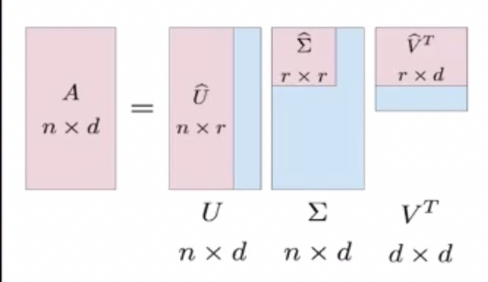
- 保留决定数据分布的最主要的模式（丢弃的可能是噪声或其他不关键信息）
- 推荐系统，图像去噪
- 机器学习三要素
- 模型（问题建模，确定假设空间）
- 确定概率形式（函数形式）
- 能够从概率形式推导出对应的函数形式（高斯分布->线性回归）
- 策略（确定目标函数）
- 极大似然估计（经验风险最小化）
- 策略设计：训练误差->泛化误差
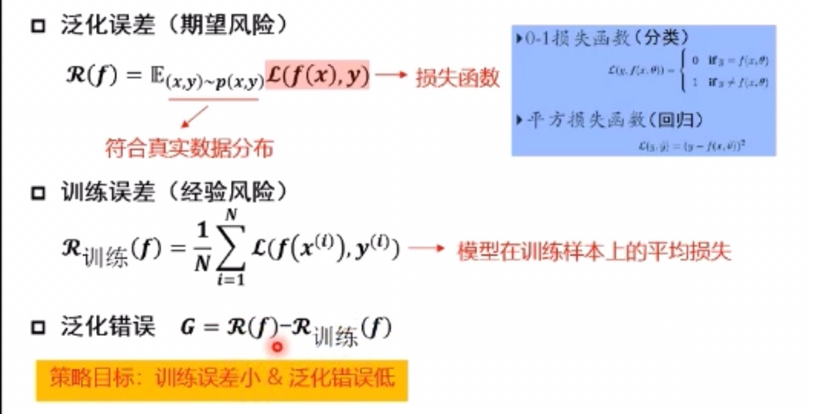
- 策略设计：无免费午餐定理
- 当考虑在所以问题的平均性能的时候，任意两个模型都是相同的
- 策略设计：奥卡姆剃刀原理
- 如无必要，勿增实体；即简单有效原理
- 如果多种模型能够同等程度地符合一个问题的观测结果，应该选择其中使用假设最小的——最简单的模型
- 欠拟合
- 训练集的一般性质尚未被学习好（训练误差大）
- 提过模型复杂度
- 过拟合
- 学习器把训练集特点当作样本的一般特点（训练误差小，测试误差大）
- 降低模型复杂度
- 数据增广（数据集越大，越不容易过拟合）
- 算法（求解模型参数）
- 模型（问题建模，确定假设空间）
- 频率学派 vs 贝叶斯学派
- 频率学派
- 关注可独立重复的随机试验中某个事件发生的频率
- 事件发生频率的极限值->发生的概率会收敛到真实的概率
- 模型参数是唯一的，需要从有限的观测数据中估计参数值
- 统计机器学习
- 贝叶斯学派
- 关注随机事件的“可信程度”（无法重复）
- 可能性 = 假设+数据；数据的作用是对初识假设作出修正，使观测者对概率的主观认识（先验）更接近客观实际（观测）
- 模型参数本身是随机变量，需要估计参数的整个概率分布
- 概率图模型
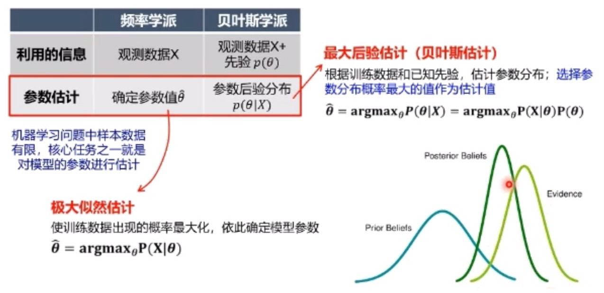
- 频率学派
卷积神经网络
绪论
- 常用步骤
- 搭建神经网络结构
- 找到合适的损失函数（交叉熵损失、均方误差）
- 找到一个合适的优化函数，更新参数（反向传播BP、随机梯度下降）
- 传统神经网络 vs 卷积神经网络
- 全连接网络处理图像的问题
- 参数太多：权重矩阵的参数太多->过拟合
- 卷积神经网络的解决方式
- 局部关联，参数共享
- 使用卷积核，每一个节点对应的参数个数就是卷积核大小（加上偏置项）
- 全连接网络处理图像的问题
基本组成结构
-
卷积 Convolutional Layer
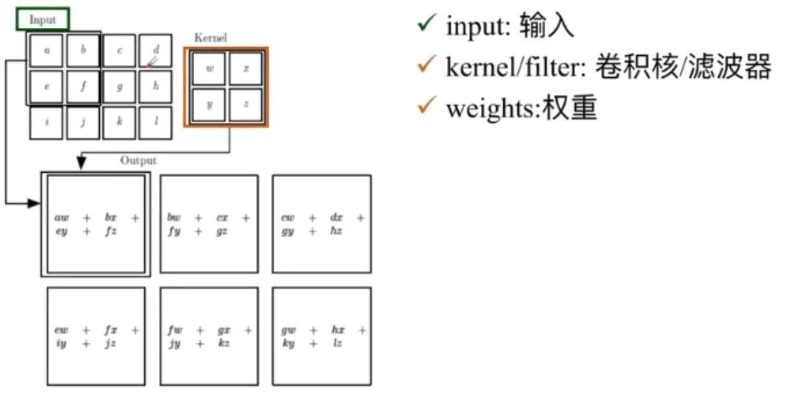
- 感受野：input的大小
- 特征图 feature map ：对应的输出
- 步长：每次滑动的距离
- 计算方式：求input和kernel的内积（对应位置相乘，然后求和），得到特征图中对应位置的值
- 深度 channel：比如rgb三层深度；
- 与之对应的，每个卷积核中也会有三个矩阵，分别对应处理三层rgb的输入
- 然后会得到三个内积值，然后加和，再加上偏置项，得到特征图中对应位置的图
- 每一个卷积和对应一个特征图，即每一次的卷积操作，输出的深度等于卷积操作中的卷积核个数
- padding
- 对输入的四周都进行拓宽
- 输出特征图的大小
- $ （N - F)/stride +1 $
- 输入大小N减去感受野大小F，除以步长，加一
- 有padding时，$ （N + padding *2 -F)/stride +1 $
-
池化 Pooling Layer
- 将一个feature map进行缩放操作
- 保留了主要特征的同时减少参数与计算量，防止过拟合，提高模型繁华能力
- 处在卷积层与卷积层之间，全连接层与全连接层之间
- Max pooling（最大值池化）/Average pooling（平均池化）
- 在池化过程中，也是有对应的filter和stride（进行池化操作，非卷积操作）
-
全连接
- 两层之间所有神经元都有权重连接（参数量最大）
- 通常在卷积神经网络尾部
卷积神经网络典型结构
AlexNet
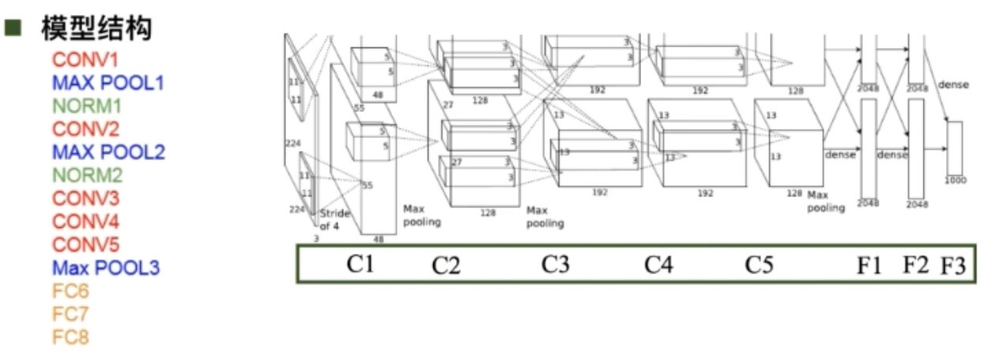
- 成功原因
- 大数据训练 ImageNet
- 非线性激活函数 ReLU
- 防止过拟合 Dropout，Data augmentation（数据增强）
- 其他 双GPU实现（网络被分为上下两部分）
- 激活函数
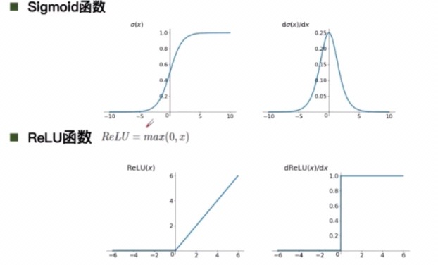
- ReLU函数解决了梯度消失问题（导数恒为一）；计算速度快；收敛速度远快于sigmoid
- DropOut（随机失活）
- 训练时随机关闭部分神经元，测试时整合所有神经元（防止过拟合）
- Data augmentation（数据增强）
- 平移、翻转、对称
- 改变rgb通道强度
- 成功原因
ZFNet
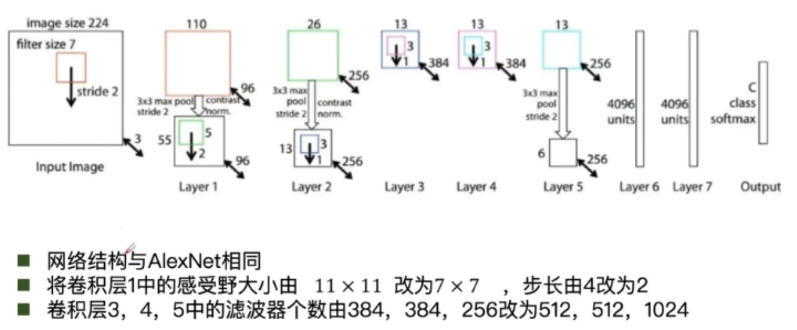
GoogleNet
- 增加了两个辅助分类器
- 参数量大概是Alexnet的1/2
- 没有额外的全连接层（FC层）
- inception模块
- 初衷：多卷积核增加特征多样性
- 不同的卷积核操作之后，会有不同的channel和feature map大小，然后进行padding操作，再将多个卷积核的操作结构进行串联即可
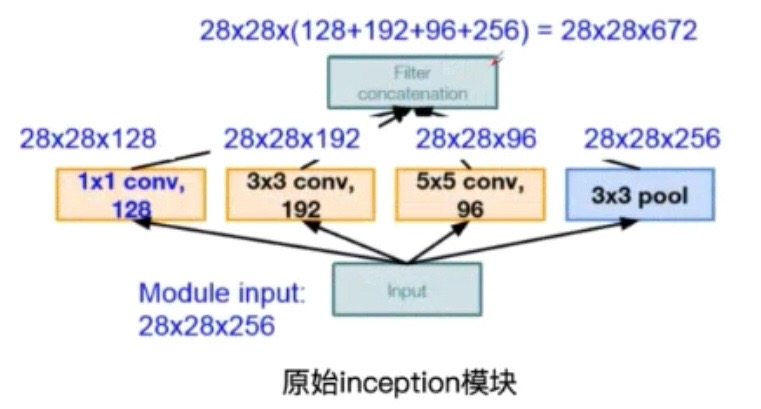
- 但会存在问题，就是随着网络的进行，channel会越来越大，导致计算越来越复杂
- 解决思路：插入1*1卷积核进行降维
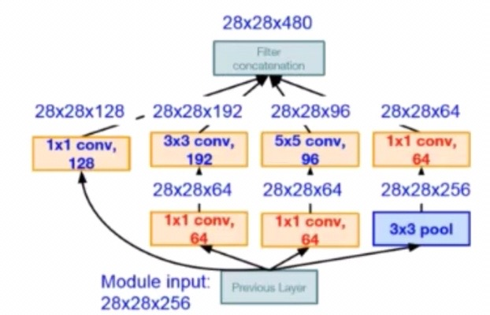
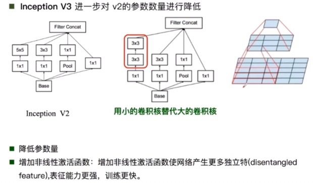
ResNet（残差学习网络）
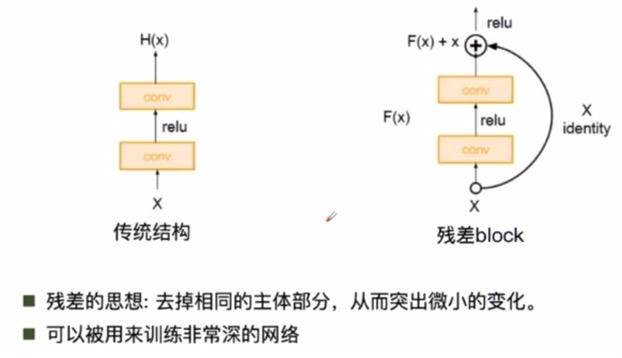
- 这种残差形式的网络，输入x输出F(x)+x，这样就避免了梯度消失的问题；同时网络自身也可以进行学习，例如某一部分的输出F(x)为零，即该部分网络无用，所以网络自身可以根据任务需求，自动学习到一个适当的网络层数。
代码实践 Tensorflow-CNN
因为之前学习过这个视频内容，所以这一部分代码自己也动手实践过，写在了自己之前的blog上。
链接地址：https://hyzs1220.github.io/2019/11/17/CNN-简单图片分类/